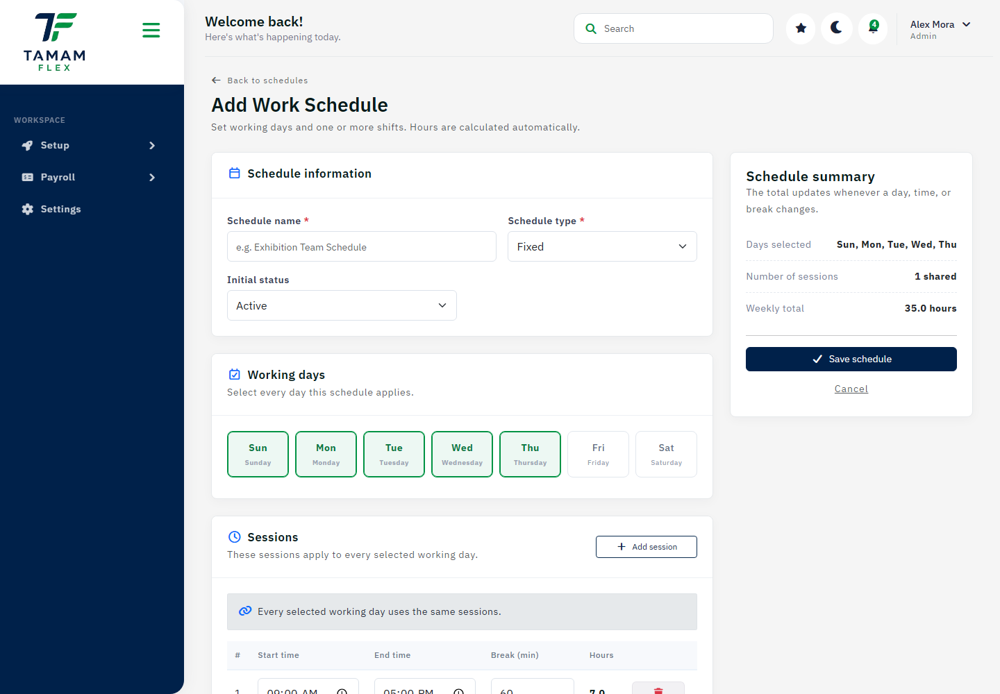

Setup
Add work schedule
Create a schedule with work hours and status.

How to use this page
- Confirm the selected company and current context.
- Review the visible information, filters, and available actions.
- Make changes only when your role gives you permission.